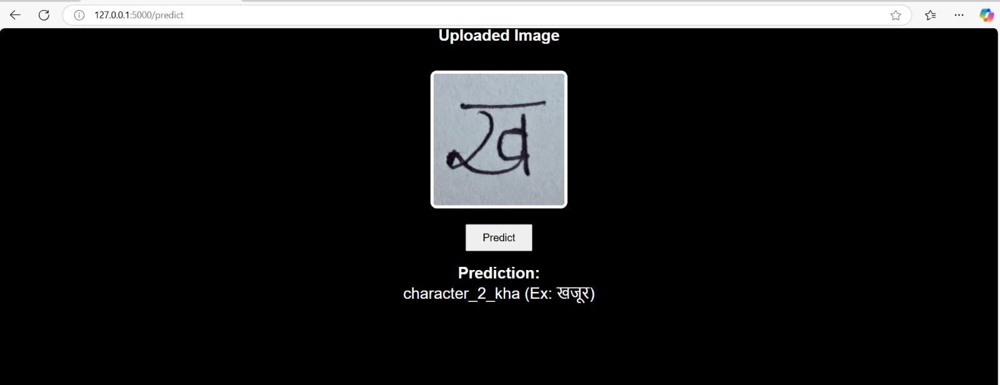
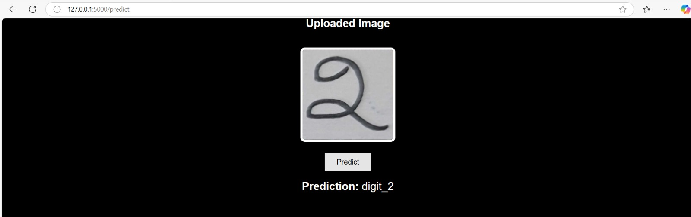
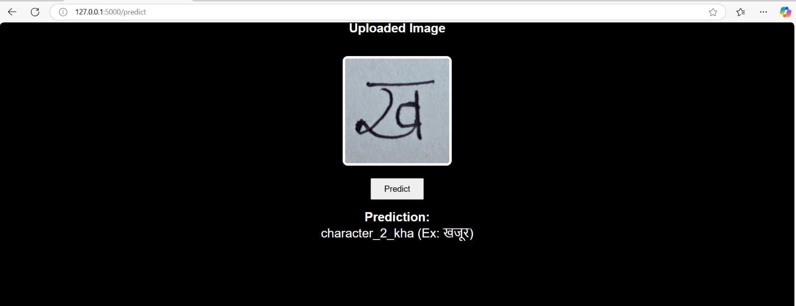
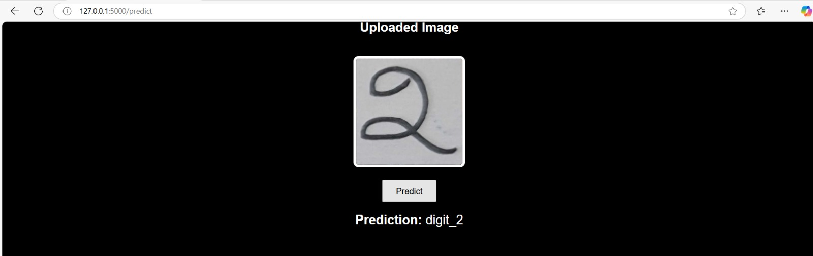
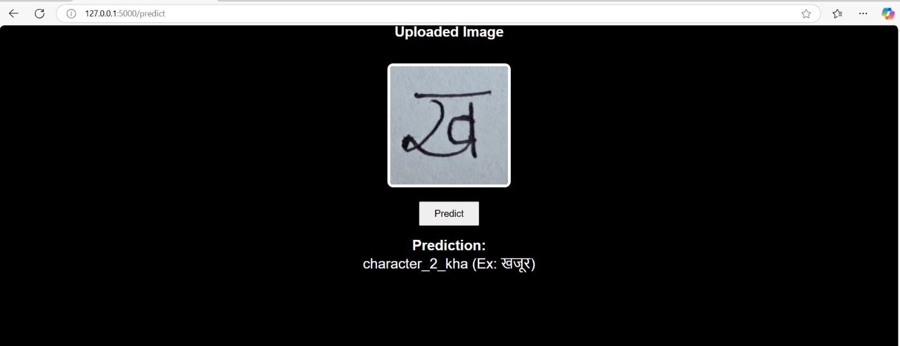
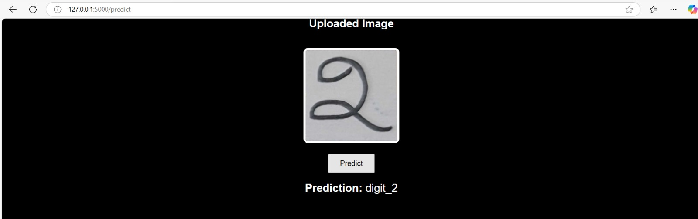

•Designed and implemented a backend system for real-time handwritten character recognition using CNN models.
•Integrated Flask backend with PyTorch model for real-time recognition via a responsive web interface.
•Improved system reliability through structured error handling and validation.
Tech stack: Flask, PyTorch, OpenCV, HTML, CSS, JS

